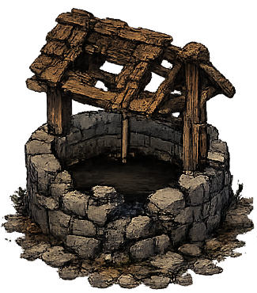
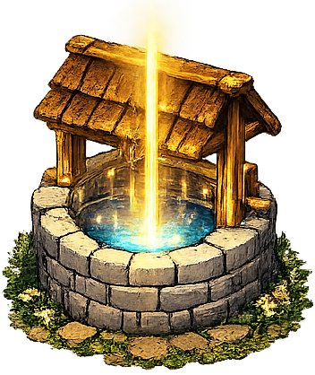

In Asteron gibt es einen alten Brunnen, der einmal etwas Besonderes konnte:
Er hat Wörter und Namen festgehalten - damit sie nicht vergessen werden.
Aber irgendetwas ist schiefgelaufen. Seitdem wissen die Bewohner nicht mehr,
wann man ein Wort groß und wann man es klein schreibt.
Du bist ein Schriftläufer. Du kennst die Regeln noch. Hilf dem Dorf - und repariere den Brunnen.

